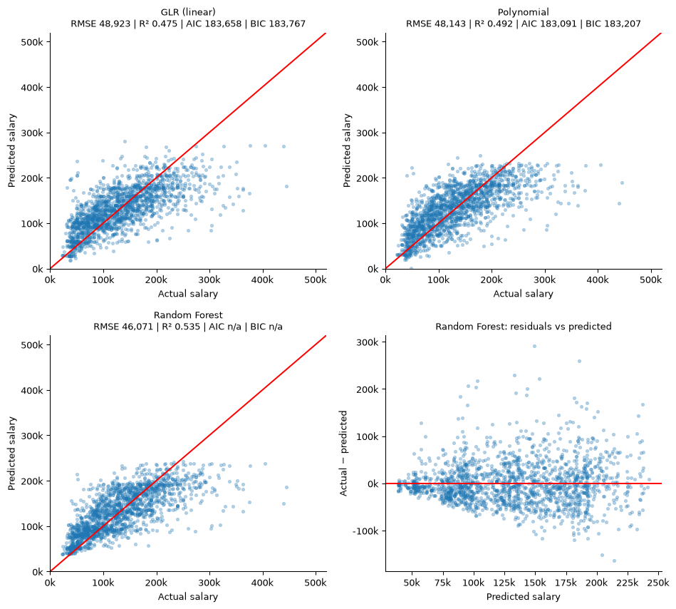
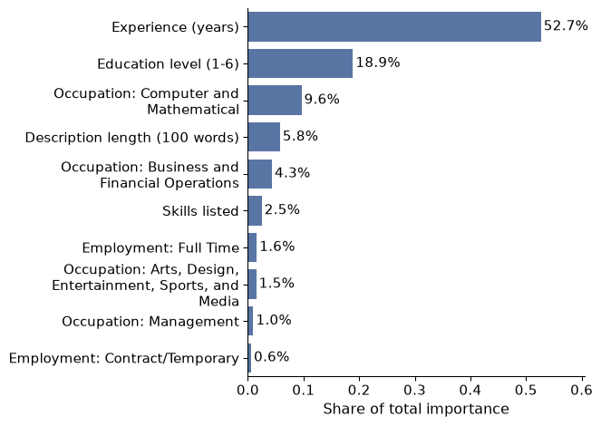

Projects
Data and AI work from my MS at Boston University, and the professional projects behind my career.

Salary prediction with PySpark ML
Big Data and Cloud Analytics, Boston University, 2026
Predicted annual salary for 9,300 US job postings with Spark on AWS EC2. I rebuilt the salary target from mixed hourly and annual pay, extracted required experience from posting text, and compared linear, polynomial and random forest models. The random forest reached a test R² of 0.54; experience showed a strongly diminishing return after about 12 years.
PySpark MLlib, AWS EC2, Python, Seaborn, Quarto

What drives pay in job postings
Big Data and Cloud Analytics, Boston University, 2026
Required experience explains just over half of the model’s predictive power, followed by education level and occupation, with computing roles paying the most.
Random forest, feature importance
7,074
job postings analysed
Career market analysis: securities and investments
Group project, Boston University, 2026
Which skills, locations and role variants open entry into BI and data analyst careers in US securities and investments. I led site structure, integration and publishing, and documented four data defects we repaired.
Python, pandas, Quarto, GitHub Pages
Mesa
agent-based simulation
Agent-based financial modeling
AI Agents and Automation, Boston University
Built agent-based simulations to test how trading strategies and market participants interact, and analysed the simulated scenarios in Python.
Python, Mesa, pandas, matplotlib
~2 days
of manual work saved per reporting cycle
Executive reporting automation
MassMutual, Global Business Services, 2026
Automated recurring hiring, headcount and budget reporting: data pulled from the ServiceNow API, orchestrated in Power Automate and published as self-service Tableau dashboards for leadership.
ServiceNow API, Power Automate, Tableau, Copilot
Self-correcting
data-quality loop
Data integrity checker
MassMutual, 2026
Designed a validation system that checks every record against business rules, finds the accountable owner and emails a targeted correction request, with a KPI tracker measuring how fast gaps get fixed.
Python, Excel, business-rule validation
1,500+
users moved to one ITSM platform
HaloITSM implementation
City of Portland, Maine, 2023–2026
Led the enterprise rollout of a new service management platform: vendor engagement, workflow and catalog design, data migration, cutover and stabilization without operational disruption.
HaloITSM, ITIL, change management
CJIS
compliant MFA for police systems
Multi-factor authentication for the police department
City of Portland, Maine
Translated CJIS and FIPS 140-2 requirements into a phased rollout of hardware and mobile MFA for dispatchers and officers, with break-glass procedures and zero downtime during critical hours.
CJIS, FIPS 140-2, identity management
2013
bitcoin-to-fiat, before the playbooks existed
UkrExchange
Co-founder and product manager
Co-founded one of Ukraine’s first BTC-to-fiat exchanges. Designed trading and settlement workflows and integrated local banking APIs to automate fiat deposits and withdrawals.
Order books, settlement, KYC/AML, banking APIs
$500K+
mining infrastructure delivered
Crypto mining infrastructure
Independent project, 2017–2022
Took an ASIC and GPU mining operation from vendor sourcing and facility build-out to launch, with minute-level revenue and cost dashboards and a hosted-mining revenue stream.
ASIC/GPU, mining pools, P&L dashboards